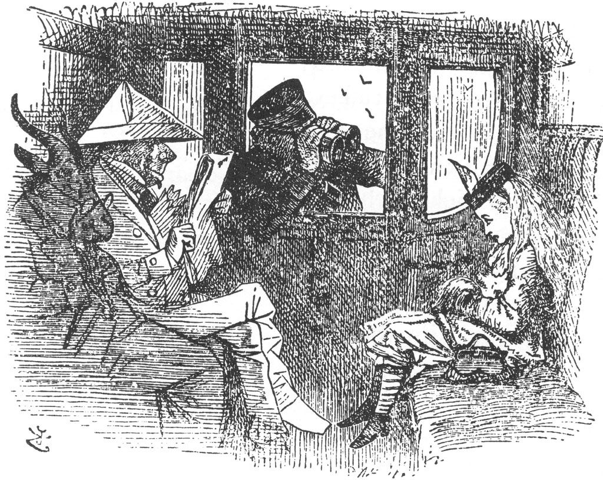
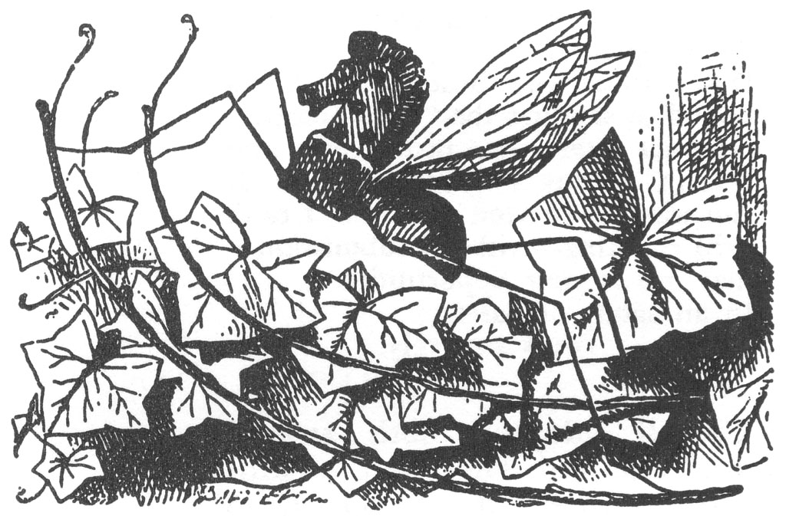
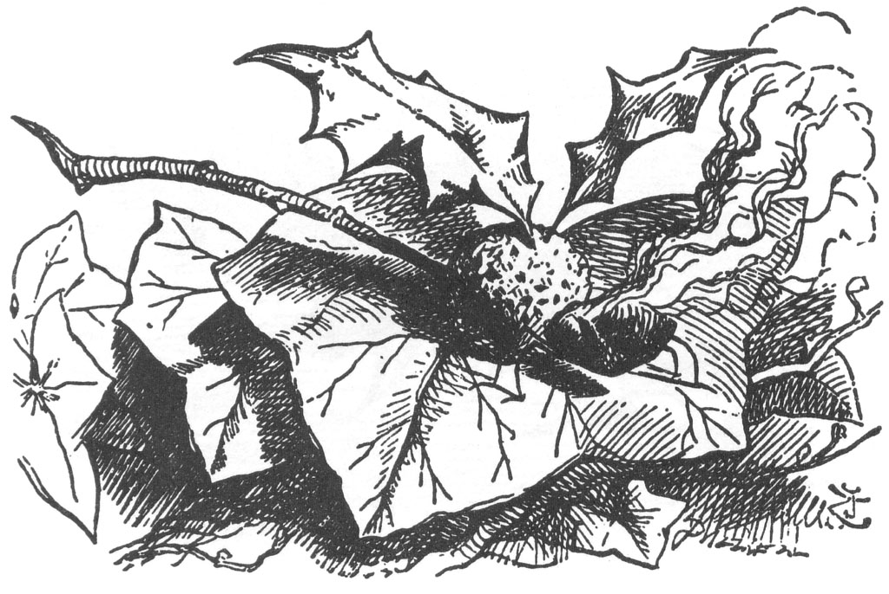
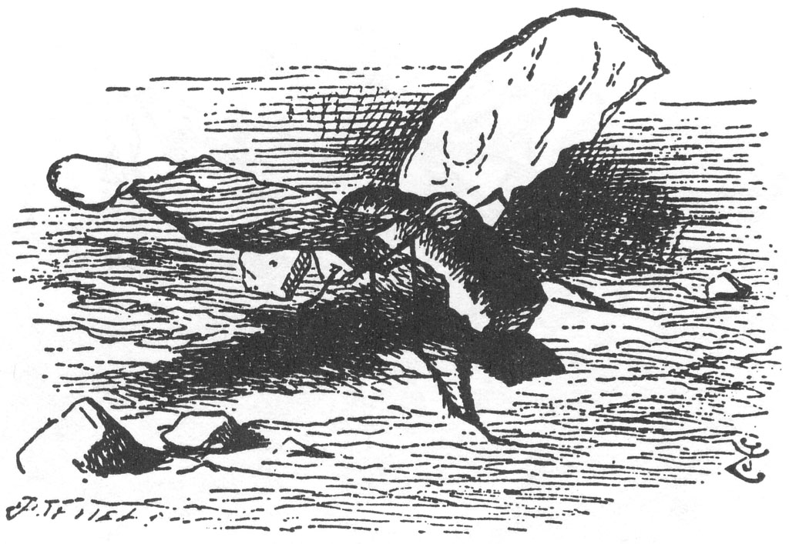
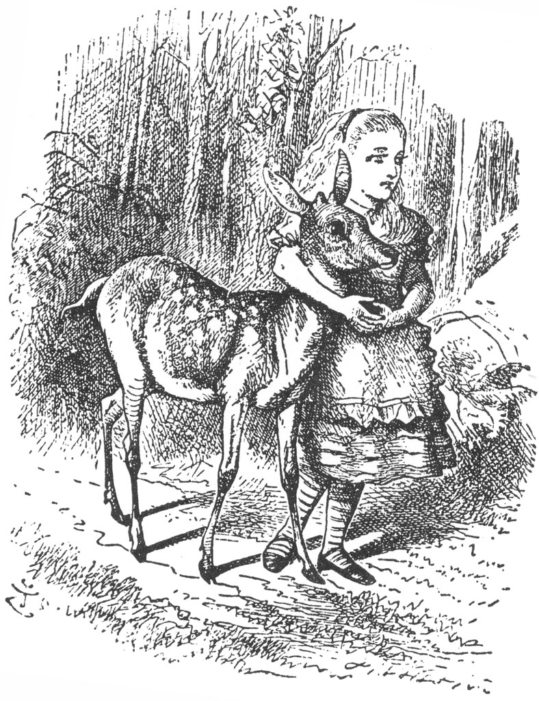

Tabii ki yapılacak ilk iş seyahat edeceği ülkeyi iyice araştırmaktı. “Bu coğrafya öğrenmek gibi bir şey,” diye düşündü Alice, daha ilerleri birazcık görebilmek ümidiyle ayak parmaklan üzerinden yukarıya baktığı sırada. “Başlıca nehirleri... hiç yok... Başlıca dağlar... Var olan tek dağın üstündeyim, ama bir ismi olduğunu sanmıyorum. Başlıca kentleri... Vay! Aşağıda bal yapan şu yaratıklar da ne ki? Arı olacak halleri yok... arıları kimse bir mil öteden göremez...” Bir süre, çiçeklerin arasında oradan oraya uçup duran bir tanesinin hortumunu çiçeklere sokuşunu sessizce seyretti, “sanki normal bir arı,” diye düşündü.
Ne var ki, bu normal bir arı dışında bir şeydi: aslında bir fildi... Alice, bunu hemencecik fark etmişti, her ne kadar bu düşünce ilk başta soluğunu kesse de. “Ne devasa çiçekler olmalı onlar!” diye düşündü ardından da. “Çatıları sökülüp sap takılmış kır evlerine benziyorlar... Ne kadar da çok bal yapıyorlardır! Sanırım aşağıya gidip... oh, hayır, daha değil,” diye devam etti. Tam tepeden aşağı doğru koşmaya başlayacağı sırada, kendine engel olmuştu ve bu ani çekingenliğine bir özür bulmaya çalıştı. “Elimde onları öteye savuracak uzun bir dal olmadan yanlarına gitmek iyi bir fikir değil... Bu yürüyüşün hoşuma gidip gitmediğini sormaları da ne eğlenceli olacak hani, ben de diyeceğim ki... ‘Ah, çok çok sevdim... (işte burada o çok sevdiği hareketi yaparak saçların» arkaya savurdu) ama yol çok tozluydu, bir de hava çok sıcaktı, filler de öyle muzipti kil'
“Sanırım, öbür yoldan gitsem daha iyi olacak,” dedi Alice bir süre duraksadıktan sonra, “belki de filleri daha sonra da görebilirim. Hem, Üçüncü Kareye de öyle gitmek istiyorum ki!”
Böylece, Alice bu özrün ardından, tepeden aşağı koştu ve altı küçük çayın ilkinin üzerinden zıplayıp geçti.
* * *
“Biletler, lütfen!” dedi Biletçi, kafasını camdan içeri sarkıtarak. Bir anda herkes biletini eline almıştı: neredeyse insan boyundaydılar ve vagonu doldurmuşa benziyorlardı.
“Hadi, bakalım! Biletini göster çocuk!” diye devam etti Biletçi, Alice’e kızgın kızgın bakarak. Ardından da çok sayıda ses hep bir ağızdan (“tıpkı bir koro gibi” diye düşündü Alice) “Bekletme onu çocuk! Baksana, bir dakikası bin paund eder!” dediler.
“Kusura bakmayın, ama biletim yok,” dedi Alice korka korka. “Geldiğim yerde bilet gişesi yoktu.” Koro yeniden başladı. “Geldiği yerde bilet gişesine yer yokmuş. Oradaki yerlerin santimetresi birkaç bin paund edermiş!”
“Mazeret bulma!” dedi Biletçi. “Makinistten bir tane alman gerekirdi.” Ve bir kez daha koro başladı, “Treni süren adamdan yani. Sırf dumanının bir pufu bile bin paund eder!”
Alice, kendi kendine, “O halde, konuşmanın bir anlamı yok,” diye düşündü. Alice konuşmadığından, bu sefer sesler katılmadı, ama hayret ki bu kez de koro halinde düşünmeye başladılar (umarım koro halinde düşünmenin ne demek olduğunu bilirsiniz... çünkü itiraf edeyim ki, ben bilmiyorum), “Hiçbir şey söylememek daha iyi. Konuşmadaki her bir sözcük bin paund eder!”
“Bu gece rüyamda bin paund göreceğim. Kesinlikle göreceğim!” diye düşündü Alice.

Tüm bu süre boyunca Biletçi, önce bir teleskoptan, sonra bir mikroskoptan ve ardından da bir opera dürbününden ona bakıyordu. Sonunda, “yanlış yere seyahat ediyorsun,” deyip pencereyi kapatarak uzaklaştı.
“Bu yaşta bir çocuk,” dedi karşısında oturan beyefendi (beyaz kâğıttan bir elbisenin içindeydi) “kend[ adını bilmese de, hangi yöne gittiğini bilebilmesi gerekir!”
Beyazlı beyefendinin yanında oturan bir Keçi, gözlerini yumup yüksek sesle, “Alfabeyi bilmese bile, bilet gişesine giden yolu bilmesi gerekir!” dedi.
Keçinin hemen yanında Kınkanatlı bir böcek oturuyordu (toptan tuhaf bir yolcu grubunu oluşturuyorlardı); peşpeşe konuşmaları sanki kuralmış gibi, “geriye ancak bagaj olarak dönebilir!” diyerek devam etti Kınkanatlı da.
Alice, Kınkanatlının arkasında kimin oturduğunu göremiyor-du, ama kısık bir ses başladı konuşmaya.”Lokomotifleri değiştirin...” dedi ve orada tıkanıp konuşmasına devam edemedi.
“At sesine benziyor,” diye düşündü Alice. Kulağına yaklaşan son derece cansız bir ses “'At' ve ‘atta’ üzerine bir espri yapabilirsin, biliyorsun di mi?” dedi.
Sonra da uzaklardan kibar bir ses, ‘“Dikkat! Yeniyetmedir, kırılır,’ diye etiketlenmeli, bilirsiniz...” dedi.
Bundan sonra, diğer sesler de devam etti (“Vagon ne kadar da kalabalık!” diye düşündü Alice). “Üstünde baş olduğundan posta ile gitmeli...” “Telgrafla iletilmeli...” “Yolun geri kalan kısmında treni o çekmeli...” ve bunun gibi şeyler söyleyip duruyorlardı.
Ama beyaz kâğıtlar içindeki beyefendi öne doğru geldi ve kulağına eğilerek, “Tatlım, onlar ne derlerse desinler, boş ver, sen trenin her durduğu istasyonda bir gidiş-geliş bileti al,” dedi.
“Almam!” dedi Alice sabırsızca. “Ben bu tren yolculuğuna hiçbir şekilde ait değilim... Daha demin bir korudaydım... ve keşke oraya geri dönmek elimden gelebilse!”
“Şunun üzerine bir espri yapabilirsin,” dedi cansız ses kulağına yaklaşarak, “... ‘olmuşla ölmüş,' türünden bir şey üzerine, hani?”
Sesin nereden geldiğini anlamak için etrafına boşu boşuna bakınarak “Böyle alay edip durma,” dedi Alice. “Espri yapmaya bu kadar meraklıysan, sen kendin niye yapmıyorsun?”
Cansız ses derin derin iç çekti: çok mutsuz olduğu apaçıktı. “Keşke diğer insanlar gibi iç çekebilseydi!” diye düşündü Alice, ancak o zaman teselli edecek merhametli bir şeyler söylerdi ona. Ama bu o öyle cansız bir iç çekişti ki, eğer kulağına bu kadar yaklaşmamış olsaydı, onu hiç duyamazdı. Bu kadar yaklaşınca, kulağını öyle bir gıdıkladı ki zavallı küçük yaratığın mutsuzluğuna dair düşüncelerini silip götürdü aklından.
“Biliyorum, sen bir dostsun,” diye devam etti Cansız ses, “gerçek bir dost ve de eski bir dost. Bir böcek olsam da beni incitmezsin.”
“Ne türden bir böcek?” diye sordu Alice birazcık kaygıyla. Asıl bilmek istediği şey sokup sokmadığıydı, fakat bunu sormanın nazik bir davranış olmadığını düşündü.
“Ne, o halde sen...” diye cansız ses söze başladığı anda lokomotiften gelen tiz bir ses onu bastırdı, herkes heyecan içinde ayağa fırladı, Alice de onların arasındaydı.
Kafasını dışarı sarkıtan At, usulca başını içeri çekip, “Sadece üzerinden atlamamız gereken bir çay,” dedi. Bundan, herkes memnun olmuş görünüyordu, yine de Alice trenlerin atlaması düşüncesinden birazcık tedirgindi. “Neyse ki, bizi Dördüncü Kareye götürecek, bu da bir teselli,” dedi kendi kendine. Biraz sonra, vagonun havaya yükseldiğini hissetti, korkudan elinin altında ne varsa anında sarıldı ona, o da Keçinin sakalıydı.
* * *
Ne ki, Alice dokundukça sakal eriyor gibiydi, sonra da kendini bir ağacın altında sessizce öylece otururken buldu... Tatarcık (bu, konuştuğu böcekti) tam başının üzerindeki ince bir dalda dengede durmaya çalışıp, kanatlarıyla kendini yelpazelendiriyordu.
Kesinlikle çok büyük bir Tatarcıktı; “Neredeyse bir tavuk kadar,” diye düşündü Alice. Yine de, bu kadar uzun bir süre konuştuktan sonra, onun yanında kendini tedirgin hissetmiyordu.
“... O halde sen tüm böcekleri sevmiyorsun?” diye, sanki hiçbir şey olmamışçasına usulca sözlerine devam etti Tatarcık.
“Konuşabildiklerinde, onları severim,” dedi Alice. “Geldiğim yerde de hiçbir böceğin konuştuğunu görmedim.”
“Sen, geldiğin yerde ne tür böceklere ayılıp bayılırdın?” diye sordu Tatarcık.
“Böceklere hiç de ayılıp bayılmam,” diye açıkladı Alice, “çünkü onlardan çok korkuyorum... en azından büyük olanlardan. Ama sana bazılarının adlarını söyleyebilirim.”
“Adlarını biliyorlardır tabii?” dedi Tatarcık kayıtsızca.
“Bildiklerine hiç tanık olmadım.”
“Bilmiyorlarsa, adlarının olmasının ne yararı var ki?” dedi Tatarcık.
“Onlara bir yararı yok,” dedi Alice, “ama sanırım, onlara bu adları veren insanlara yararı var. Öyle olmasa, neden adları olsun ki?”
“Bilemem,” dedi Tatarcık. “Aşağıdaki ormanda, hiçbirisinin adı yok... Sen, yine de, isimlerini bir sıralasana.”
“Pekala, At Sineği var,” diye başladı Alice, parmaklarıyla sayarak.
“Tamam,” dedi Tatarcık: “Eğer, şu çalılığın ortasına doğru bakarsan, bir Salıncaklı At Sineği göreceksin. Baştan ayağı ağaçtan yapılmış ve kendi kendine sallanarak daldan dala gezip durur.”
“Neyle beslenir?” diye sordu Alice merakla.
“Özsu ve talaşla,” dedi Tatarcık. “İsimlerini saymaya devam et.”

Alice büyük bir merakla Salıncaklı At Sineğine baktı, daha yeni boyanmış olmalıydı: öyle parlak ve yapış yapış görünüyordu ki. Sonra sözlerine devam etti.
“Bir de Yusufçuk var.”
“Hemen başının üstündeki dala bak,” dedi Tatarcık, “orada Ateştenkapye Yusufçuğunu göreceksin. Vücudu erik pudinginden, kanatları çobanpüskülü yapraklarından, kafası da kaynar konyakta kuru üzümden yapılmış.”

“Neyle beslenir?” diye sordu Alice daha önceki gibi.
“Bulgur sütlacı ve üzümlü tarttan,” diye yanıtladı Tatarcık, “yuvasını da Noel hediyesi kutusunun içine yapar.”
“Bir de Kelebek var,” diye devam etti Alice, kafasını ateşe sokan böceği iyice inceledikten sonra ve kendi kendine “acaba böcekler bu yüzden mi mumlara doğru uçarlar... belki hepsi sonunda Ateş-tenkapye Yusufçuğuna dönüşmek isterler,” diye düşündü.
“Ayaklarının altında gezinen,” dedi Tatarcık (Alice, korku içinde ayaklarını çekti) Tereyağlı Ekmek Böceği. Kanatları ince tereyağlı ekmek dilimleri, gövdesi ekmek kabuğu, kafası da kesme şekeri.”
“O neyle besleniyor?”
“Kremalı açık çayla.”
Alice’in kafasına bir soru takıldı. “Diyelim ki bulamadı?” dedi.

“O zaman tabii ki ölür.”
“Ama bu pek sık oluyor demektir,” diye belirtti Alice, düşünceli düşünceli.
“Hep oluyor,” dedi Tatarcık.
Alice, bundan sonra birkaç dakika sessizce düşüncelere daldı. Bu arada Tatarcık, Alice'in başının üzerinde vızıldayıp durarak kendince eğleniyordu; nihayet durup, “İsminden olmak istemezsin, öyle di mi?” diye sordu.
“Tabii ki hayır,” dedi Alice birazcık endişelenerek.
“Bilmiyorum ama,” diye devam etti Tatarcık kayıtsız bir ses tonuyla, “sen yine de bir düşün, eve adsız gitmeyi başarabilirsen ne büyük bir kolaylık olacak senin için! Örneğin, mürebbiyen seni ders çalışmaya çağırıyor. ‘Hadi gel...’ diyecek ve öylece kalacak, çünkü çağıracağı bir adın olmayacak, sen de o zaman gidip ders çalışmak zorunda kalmayacaksın, di mi?”
“Böyle bir şey hiçbir zaman olmaz,” dedi Alice. “Mürebbiye böyle bir şeyin mazeret olacağını asla düşünmez. Adımı hatırlamazsa, uşakların yaptığı gibi, ‘Matmazel,’ diye çağırır.
“Ne yapalım o zaman, ‘Matmazel,’ derse ve başka da bir şey demese,” diye bir açıklama yaptı, Tatarcık, “tabii ki ‘mat’ edilmişsin demektir, ‘ezelden’. Şaka şaka. Keşke sen yapsaydın bu şakayı,” dedi.
“Neden benim yapmamı istiyorsun ki?” diye sordu Alice. “Çok kötü bir şaka bu.”
Bunun üzerine Tatarcık sadece derin derin iç çekti, bir yandan dayanaklarından kocaman iki damla gözyaşı süzülüyordu.
“Seni bu kadar rahatsız ediyorsa,” dedi Alice, “o zaman şaka yapmaman gerekiyor demektir.”
Sonra o hüzünlü iç çekişlere bir yenisi eklendi, zavallı Minik Tatarcık bu sefer gerçekten iç çeke çeke eriyip bitmişti, çünkü Alice dönüp yukarı baktığında o ince dalda Tatarcık’tan eser kalmamıştı. Alice de bu kadar uzun süre aynı yerde oturmaktan biraz üşüdüğünden kalkıp yürümeye başladı.
Derken, bir yanında bir korunun yer aldığı açık bir alana geldi. Son korudan çok daha karanlıktı, bu yüzden içine girmeye biraz ürktü. Yine de bir kez daha düşününce, girmeye karar verdi; “çünkü kesinlikle geri dönmeyeceğim,” diye düşündü kendi kendine ve bu da Sekizinci Kareye gitmenin tek yoluydu.
“Bu,” diye düşündü Alice, “hiçbir şeyin adının olmadığı koru olmalı. Oraya gidersem, acaba benim adıma ne olacak. Adsız kalmak hiç de hoşuma gitmez... çünkü o zaman bana başka bir isim vermek zorunda kalacaklar, bu da hiç kuşku yok ki çirkin bir ad olacak. Ama o zaman da eski adımı alan yaratığı bulmaya çalışırken ne eğlenirim doğrusu! Bu, insanların köpeklerini kaybettiklerinde verdikleri ilanlar gibi bir şey... Tırla' diye adıyla çağırdığınız anda hemen tepki verir, pirinçten tasması var... Biri karşılık verinceye değin karşınıza çıkan her şeye ‘Alice’ diye seslendiğinizi bir hayal edin! Ama akılları varsa buna karşılık vermezler!”
Böyle dolaşıp durduğu sırada bir de baktı ki koruya varmış; pek serin ve gölgeli bir yerdi burası. “Neyse, yine de bu da bir teselli,” dedi Alice ağaçların altına girdiği anda, “bu kadar sıcaktan bunaldıktan sonra, bu şeyin, şeyin altına girmek... neyin?” diye devam etti, o sözcüğün bir türlü aklına gelmemesinin verdiği şaşkınlıkla. ”Yani demek istiyorum ki, bu şeyin altına... şunun altına, hani işte şu!” dedi elini ağacın gövdesine değdirerek. “Acaba bu kendine ne ad takmıştır? Hiçbir adı olmadığından eminim... Yok canım, kesinlikle yoktur!”
Düşüncelere dalarak bir dakika öylece sessiz kaldı; sonra birden yeniden başladı. “İşte şimdi gerçekten başıma geldil Şimdi kimim ben? Elimden gelse hatırlayacağım! Kararlıyım, anımsayacağım!” Ne ki, kararlı olmasının ona çok da bir faydası olmamıştı, büyük bir şaşkınlıktan sonra tek söyleyebildiği, “L, biliyorum, adım L ile başlıyor!” oldu.
Tam o anda bir Yavru Alageyik çıkageldi; o kocaman uysal gözleriyle Alice’e bakıyordu; ama hiç de korkmuşa benzemiyordu.
“Buraya gel! Buraya gel!” dedi Alice, elini uzatıp onu okşamaya çalışarak; fakat Yavru Alageyik irkilerek biraz geri çekildi ve tekrardan Alice’i seyretmeye başladı.
“Adın ne?” dedi Yavru Alageyik sonunda. Öyle yumuşak, tatlı bir ses tonu vardı ki!
“Keşke bilebilseydim!” diye aklından geçirdi zavallı Alice. “Şimdilik hiçbir şey,” dedi hüzünle.
“Bir daha düşün,” dedi Yavru Alageyik, “böyle olmaz.”
Alice düşündü, ama aklına hiçbir şey gelmiyordu. “Lütfen, söyler misin, senin adın ne?” dedi Alice çekine çekine. “Belki bu birazcık bana yardımcı olabilir.”
“Birazcık ileriye gelirsen söyleyeceğim,” dedi Yavru Alageyik. “Burada anımsayamıyorum.”
Bunun üzerine Alice, kollarını Yavru Alageyik’in yumuşacık boynuna sevgiyle doladı ve koru boyunca başladılar birlikte yürümeye; sonunda başka bir açık alana vardılar; Yavru Alageyik burada aniden havaya zıplayarak, kendini Alice’in kollarından kurtardı. ”Ben bir Yavru Alageyik’im!” diye haykırdı sevinç içinde. “Aman Tanrım, sen bir insan yavrususun!” Yavru’nun o güzelim kahverengi gözlerine birden bir korku çöktü ve anında dörtnala koşup oradan uzaklaştı.
Alice, sevgili minik yol arkadaşını bu denli çabuk kaybetmenin verdiği öfkeyle her an ağlamaya hazır bir şekilde, Yavru Alageyik’in ardından öylece bakakaldı. “Hiç değilse, şimdi adımı biliyorum,” dedi, “bu da bir teselli. Alice... Alice... Bir daha adımı hiç unutmayacağım. Acaba şimdi hangi tabelayı izlemem gerekiyor?”
Bu yanıtlanması çok da zor bir soru değildi, zaten sadece bir yol vardı ve her iki tabela da bu yolu işaret ediyordu. “Bu sorunu,” dedi Alice kendi kendine, “yollar ikiye ayrılıp da, tabelalar farklı yolları gösterdiği zaman çözerim.”
Ne var ki bu pek de mümkün gözükmüyordu. Uzun bir süre yoluna devam etti, ancak nerede yollar ikiye ayrılacak olsa aynı yönü gösteren iki levha karşısına çıkıyordu; birincisi “TUMBADIZ’IN EVİNE GİDER”, diğeri de “TUMBADİK’İN EVİNE GİDER” diyordu.
“Demek ki,” dedi Alice sonunda, “bu ikisi aynı evde yaşıyorlar! Bunu daha önce niye hiç düşünmedim ki?.. Ama orada çok fazla kalamam. Şöyle bir uğrar, tanışır ve bu korudan nasıl çıkılacağını sorarım. Hava kararmadan Sekizinci Kare’ye bir varabilsem!”
Böyle kendi kendine konuşarak dolaşmaya devam etti; keskin bir dönemece geldiğinde, iki kısa boylu şişman adamla karşılaştı; öyle ani bir karşılaşmaydı ki bu, elinde olmadan bir an irkildi; ama ardından hemen kendini toparladı, çünkü biliyordu ki bunlar...